Sentinel
A desktop-based computer vision application built with Python and YOLOv8 for real-time vehicle and license plate detection.
Splash Screen & Application Initialization
The startup interface initializes YOLOv8 models, OCR dependencies, camera services, and database connections before loading the main application window. This controlled boot sequence provides reliable system readiness and reduces startup failures during real-time monitoring operations.
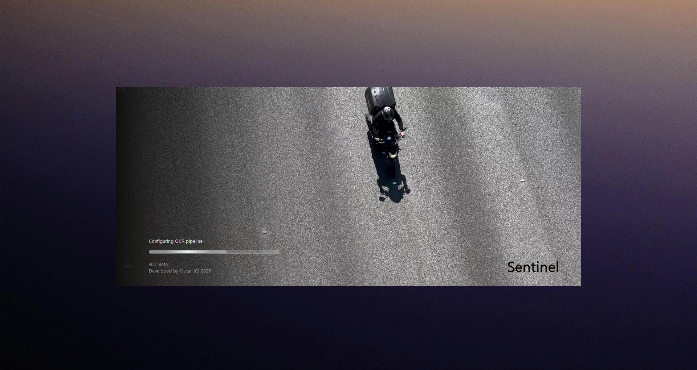
Control Center
Serving as the operational gateway, the control hub provides centralized access to detection analysis, media storage, historical records, system settings, and application controls.
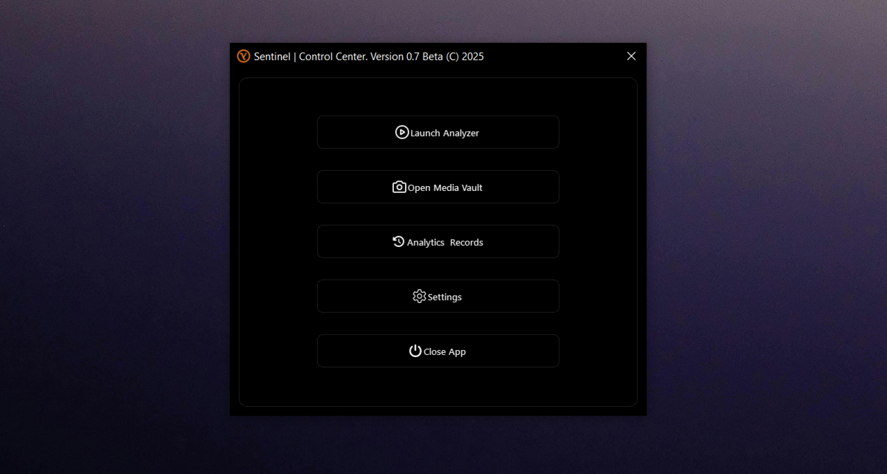
Detection Window
Powered by YOLOv8, OpenCV, and EasyOCR, the detection engine combines realtime vehicle detection, license plate recognition, OCR controls, performance monitoring, and live analytics within a unified monitoring interface. Continuous tracking of FPS, latency, system resources, and recognition results ensures reliable monitoring performance.
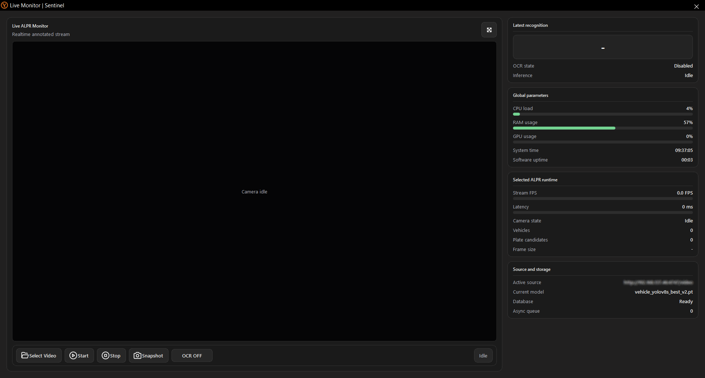
ALPR On/Off
The OCR toggle dynamically switches between vehicle-only detection and full ALPR processing. With OCR disabled, YOLOv8 performs high-speed vehicle classification and tracking. When enabled, detected vehicles are passed through OpenCV preprocessing and EasyOCR-based license plate recognition, allowing both vehicle identification and plate extraction within the same monitoring session.
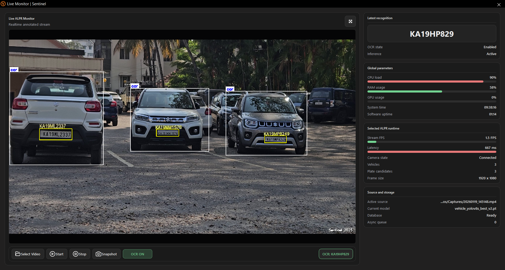
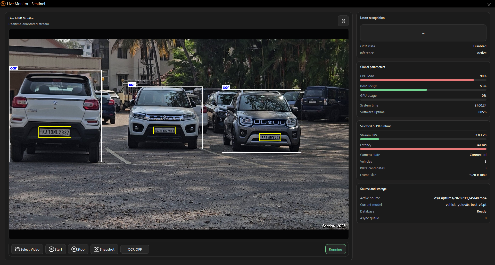
Analytics & Detection Records
Detection records are automatically archived with license plate data, frame captures, OCR results, confidence metrics, vehicle classifications, and timestamps. Integrated search, filtering, export, and record management tools provide efficient access to historical recognition data.
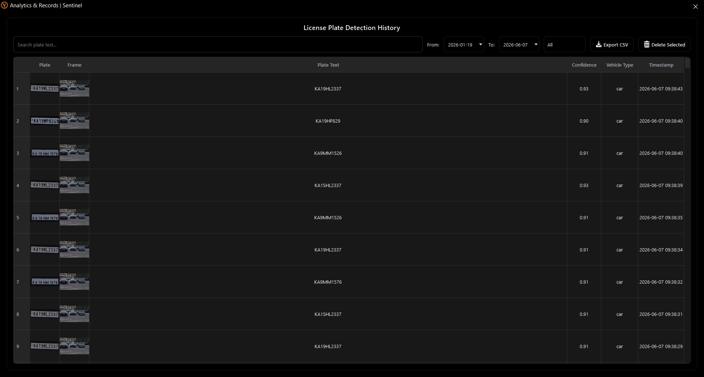
System Configuration & Model Management
The configuration system enables camera setup, performance tuning, theme customization, AI model selection, and dynamic deployment of YOLOv8 vehicle detection and ALPR models through a centralized management interface.
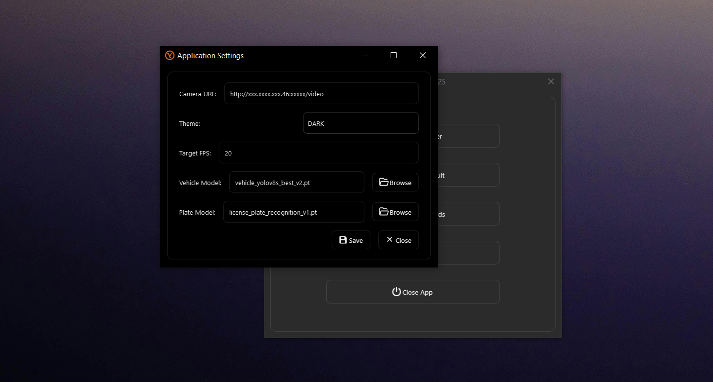
Training Overview
A custom YOLOv8 model was trained on multiple vehicle classes and evaluated using precision-recall analysis, loss convergence metrics, and mAP performance measurements. Training results achieved an overall 0.939 mAP@0.5, demonstrating reliable detection performance and strong classification accuracy across diverse vehicle categories.
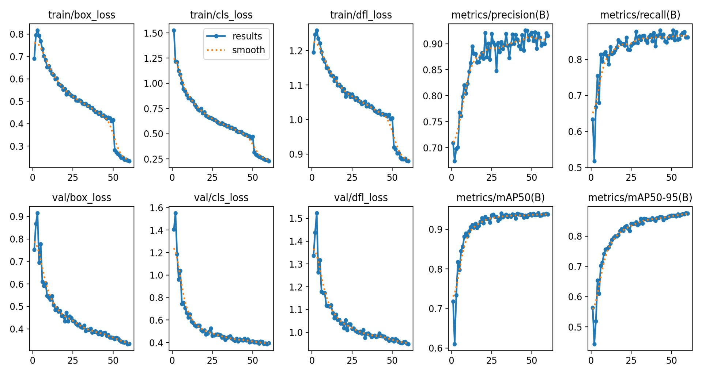
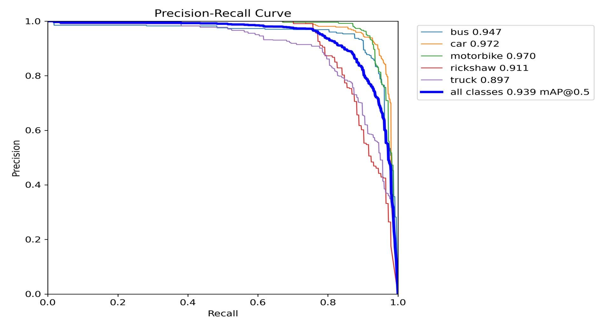
Dataset Analysis
Dataset validation included class frequency analysis, annotation verification, bounding box distribution assessment, and prediction benchmarking across validation batches. Statistical evaluation of object locations, dimensions, and class balance helped optimize training stability, detection accuracy, and model generalization across diverse vehicle categories.
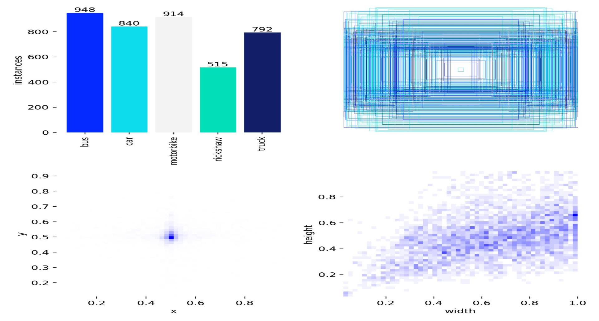
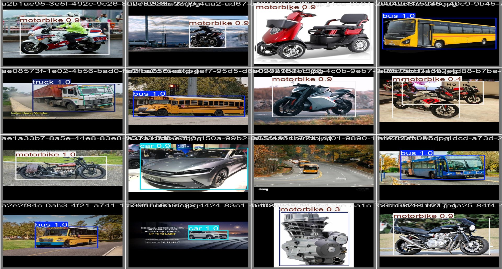
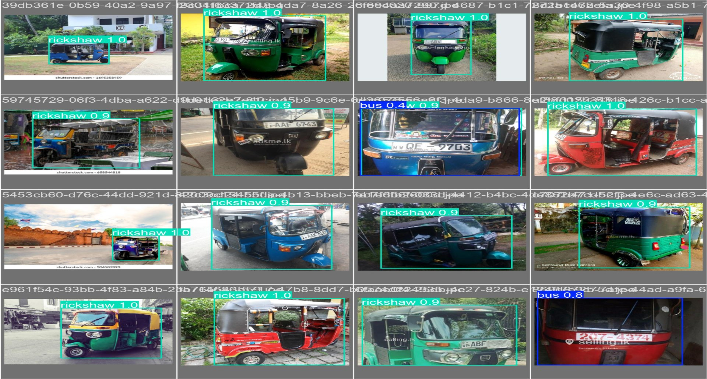
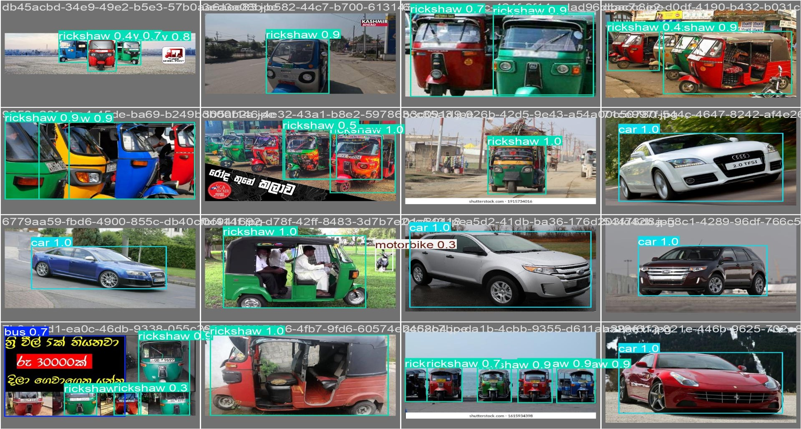
Validation Results
Validation results demonstrated strong multi-class classification performance, with cars achieving 93% accuracy, followed by motorbikes at 91% and buses at 86%. Trucks and rickshaws achieved 78% accuracy, highlighting reliable vehicle recognition and effective class separation across the validation dataset.
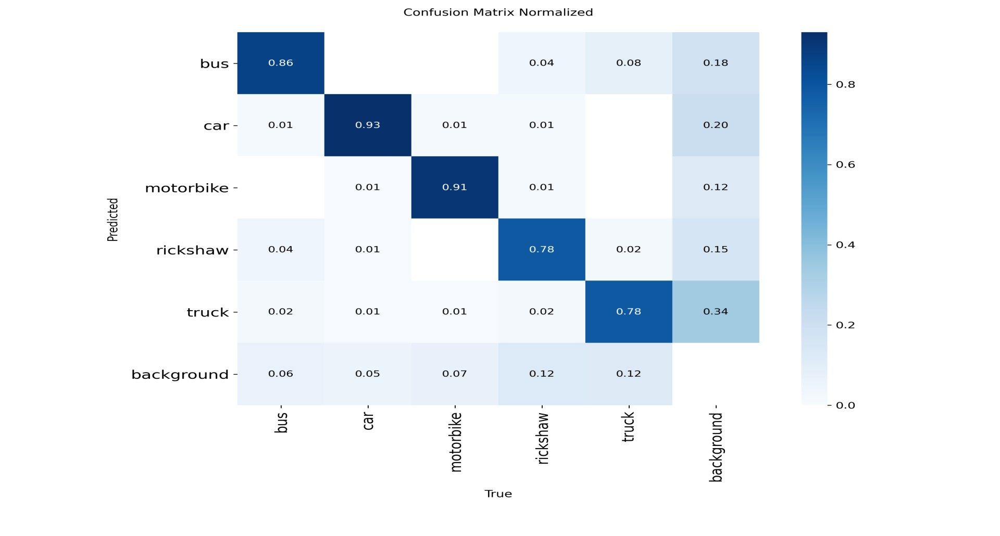
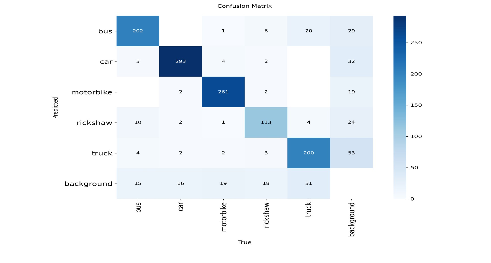
Advanced Metrics
Advanced performance analysis achieved a peak F1-score of 0.89 at 56.1% confidence, demonstrating an effective balance between precision and recall. Confidence-based evaluation curves confirmed stable and reliable detection performance across all vehicle categories.
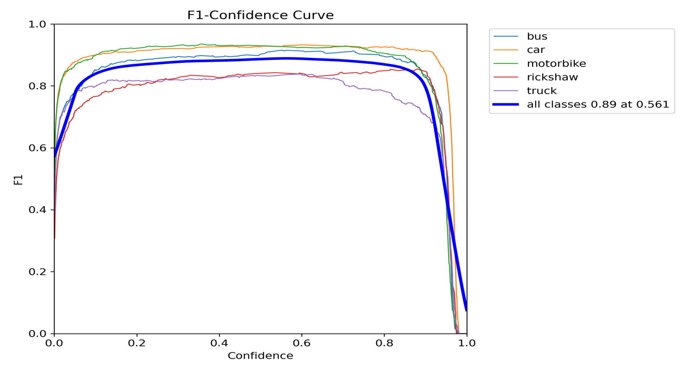
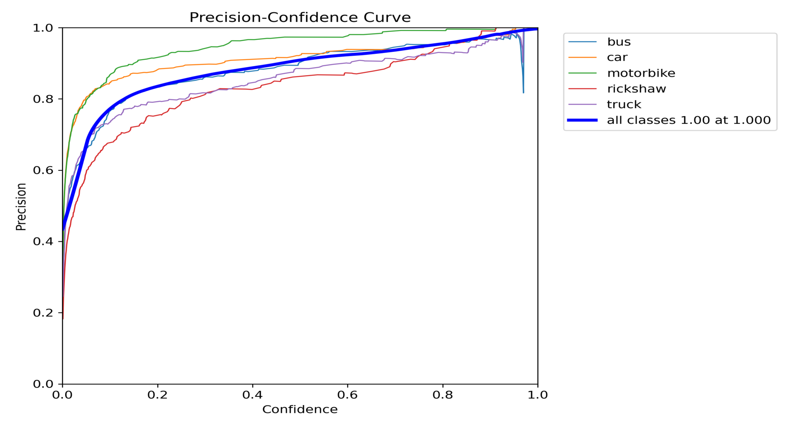
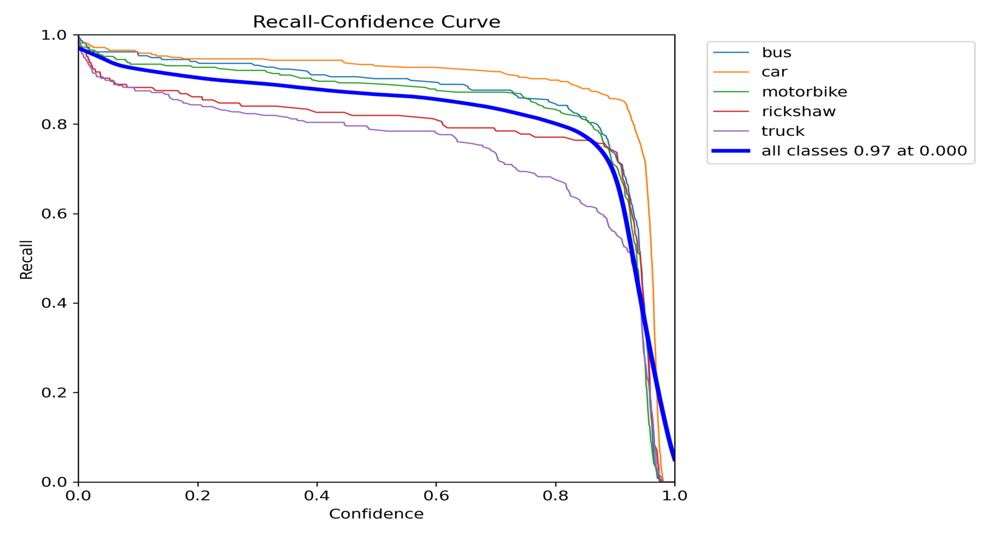